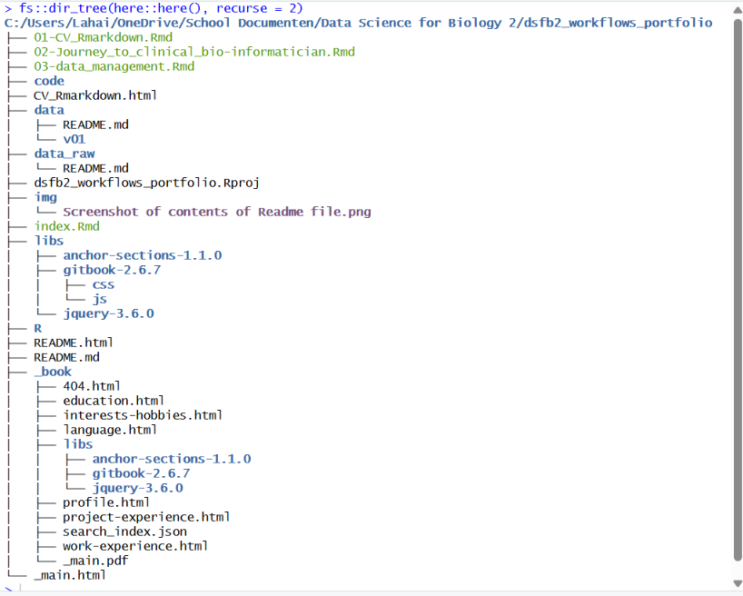
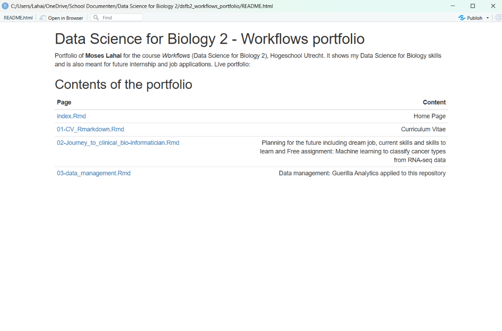

5 Data management
5.1 Organising RNA-seq data from the DAUR2 module
For the formative RNA-seq assignment of the DAUR2 module I was asked to organise the data files according to the Guerrilla Analytics principles. I no longer have access to the DAUR2 files, so I could not carry out this exercise. Instead, I applied the same principles to my own portfolio repository (next section).
For an RNA-seq project I would store each dataset in its own folder in data-raw/, with the raw fastq files (not renamed or changed), md5 checksums to check file integrity, and a README.txt describing the source, the files and the processing. Files such as bam and count files would be produced by code and stored in a separate folder
5.2 Applying Guerrilla Analytics to this portfolio
My portfolio repository follows the Guerrilla Analytics framework by Enda Ridge, as taught in the Workflows course. The main choices are:
- One project, simple structure: one RStudio project and a clear folder structure with no more than two levels: data-raw/ for raw data (one sub-folder per dataset), data/ for cleaned data, code/ for scripts, R/ for functions and img/ for images.
- Consistent file names: lowercase, with words separated by
_and a number prefix for the order of the pages. - Everything with code: data is downloaded and processed by scripts and the pages use relative paths (
here::here()), so the portfolio can be rebuilt withbookdown::render_book("."). - Version control: all code and text is tracked with Git and GitHub.
- README files: the root README explains the structure and conventions, and each dataset folder has its own README with the metadata.
fs::dir_tree(), and Figure 2 shows the README file of the repository.

Figure 5.1: fig1: Folder structure of my portfolio repository.

Figure 5.2: README file of my portfolio repository.